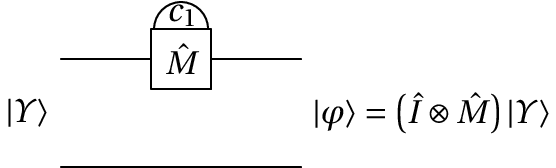

9. Medição e preparação do estado
Medição dos valores dos qbits
É possível construir uma porta quântica de medição do valor de um dos qbits. A figura seguinte mostra o diagrama de circuito da porta que mede o valor do primeiro qbit, num sistema com dois qbits. $\hat{I}$ representa o operador identidade, que não altera o valor do segundo qbit, e $c_1$ é o valor medido do primeiro qbit, que poderá ser 0 ou 1.
O estado de entrada é uma combinação linear dos 4 possíveis estados de dois cbits:
\begin{displaymath} |\otherUpsilon\rangle = \otherUpsilon_1|00\rangle + \otherUpsilon_2|01\rangle + \otherUpsilon_3|10\rangle + \otherUpsilon_4|11\rangle \end{displaymath}A probabilidade de se obter o valor $c_1=0$ é a soma dos quadrados dos módulos dos coeficientes correspondentes aos cbits em que o primeiro cbit é 0:
\begin{displaymath} |\otherUpsilon_1|^2 + |\otherUpsilon_3|^2 \end{displaymath}e a probabilidade do resultado $c_1=1$ é a soma dos quadrados dos módulos dos coeficientes correspondentes aos cbits em que o primeiro cbit é 1:
\begin{displaymath} |\otherUpsilon_2|^2 + |\otherUpsilon_4|^2 \end{displaymath}Após a medição o estado é alterado para $|\varphi\rangle$. Se o resultado da medição for $c_1=0$ o estado resultante será:
\begin{displaymath} |\varphi\rangle = \dfrac{\otherUpsilon_1|00\rangle+\otherUpsilon_3|10\rangle} {|\otherUpsilon_1|^2 + |\otherUpsilon_3|^2} \end{displaymath}Mas se o resultado for $c_1=1$, o estado final será:
\begin{displaymath} |\varphi\rangle = \dfrac{\otherUpsilon_2|01\rangle+\otherUpsilon_4|11\rangle} {|\otherUpsilon_2|^2 + |\otherUpsilon_4|^2} \end{displaymath}A informação representada pelo estado inicial são os 4 números complexos $\otherUpsilon_1$, $\otherUpsilon_2$, $\otherUpsilon_3$ e $\otherUpsilon_4$. Após a medição, perde-se parte dessa informação e não é possível prever de antemão que parte da informação será perdida no processo de medição.
Podíamos pensar em armazenar o estado inicial $|\otherUpsilon\rangle$ antes da medição e após a medição restaurar esse estado. Mas existe um princípio da mecânica quântica que mostra que é impossível "clonar" o estado quântico de um sistema.
Se a medição for feita no segundo qbit, como no diagrama de circuito seguinte, obter-se-á um valor $c_2$ igual a 0 ou 1.

A probabilidade de se obter o valor $c_2=0$ é:
\begin{displaymath} |\otherUpsilon_1|^2 + |\otherUpsilon_2|^2 \end{displaymath}e a probabilidade do resultado $c_2=1$ é:
\begin{displaymath} |\otherUpsilon_3|^2 + |\otherUpsilon_4|^2 \end{displaymath}Se o resultado for $c_2=0$ o estado final será:
\begin{displaymath} |\varphi\rangle = \dfrac{\otherUpsilon_1|00\rangle+\otherUpsilon_2|01\rangle} {|\otherUpsilon_1|^2 + |\otherUpsilon_2|^2} \end{displaymath}E se o resultado for $c_2=1$, o estado final será:
\begin{displaymath} |\varphi\rangle = \dfrac{\otherUpsilon_3|10\rangle+\otherUpsilon_4|11\rangle} {|\otherUpsilon_3|^2 + |\otherUpsilon_4|^2} \end{displaymath}A medição dos valores dos dois qbits conduz a 4 possíveis resultados para $(c1,c2)$. É fácil ver que as probabilidades desses quatro resultados é igual, independentemente da ordem das duas medições, ou se as duas medições forem feitas em simultâneo, como no diagrama seguinte:

A tabela seguinte mostra os possíveis resultados de $c_1$, $c_2$ e o estado final $|\varphi\rangle$, e as probabilidades desses resultados.
| $(c_1,c_2)$ | $|\varphi\rangle$ | Probabilidade |
|---|---|---|
| (0,0) | $|00\rangle$ | $|\otherUpsilon_1|^2$ |
| (0,1) | $|01\rangle$ | $|\otherUpsilon_2|^2$ |
| (1,0) | $|10\rangle$ | $|\otherUpsilon_3|^2$ |
| (1,1) | $|11\rangle$ | $|\otherUpsilon_4|^2$ |
Num sistema de $n$ qbits, após a medição dos valores de todos os qbits o estado passa a ser um dos $2^n$ possíveis estados de $n$ qbits.
Preparação do estado inicial
Num algoritmo de computação quântica é importante começar sempre com o mesmo estado inicial. O único caso em que não existe incerteza do estado dum sistema de $n$ qbits é quando esse estado for um dos estados próprios, ou seja, um dos possíveis estados de $n$ cbits. Como foi referido no fim da seção anterior, após uma medição de todos os qbits, o estado fica num dos estados de $n$ cbits. Como tal, as portas de medição são usadas também para preparar o estado inicial do sistema.
É habitual usar sempre como estado inicial o estado em que todos os cbits são iguais a zero, porque normalmente esse estado corresponde ao estado quântico de menor energia. O estado de menor energia pode ser atingido também por meios físicos, sem necessidade de usar as portas de medição; por exemplo, arrefecendo um sistema físico consegue-se diminuir a sua energia interna até ficar com energia mínima.
Quando for difícil usar meios físicos para que o sistema fique nesse estado inicial, basta medir os valores de todos os qbits e a seguir aplicar a porta lógica XOR nos qbits em que se obteve o resultado igual a 1, para que o valor do respetivo cbit passe a ser 0.